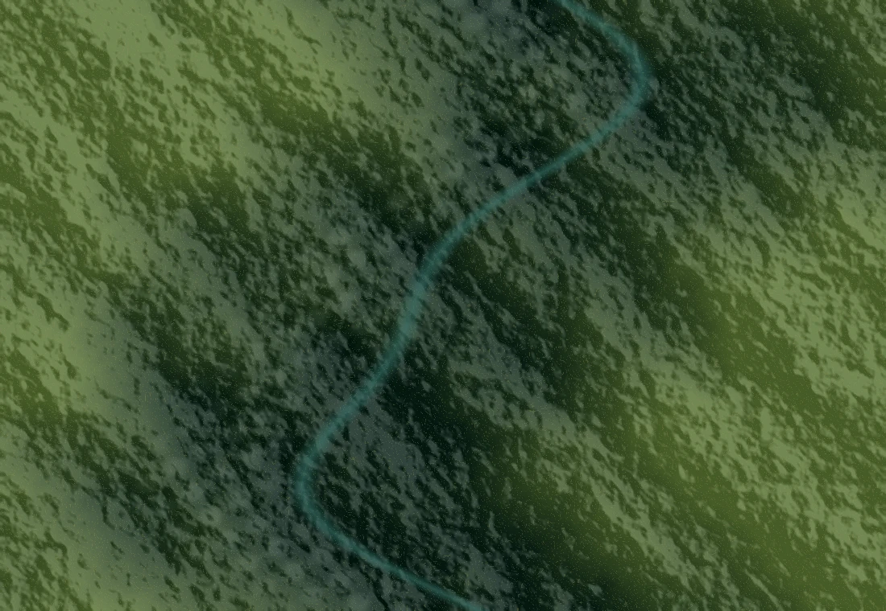

Water accounting & forest water use
How much water are forests using? I contributed satellite data, evapotranspiration analysis and reporting to a study in the Sarah Baartman District in the Eastern Cape. My water accounting work focuses on estimating the water that returns to the atmosphere through soil evaporation and plant transpiration.
I also used SEBAL to estimate forest water use in a separate postgraduate research project at the University of Fort Hare.
